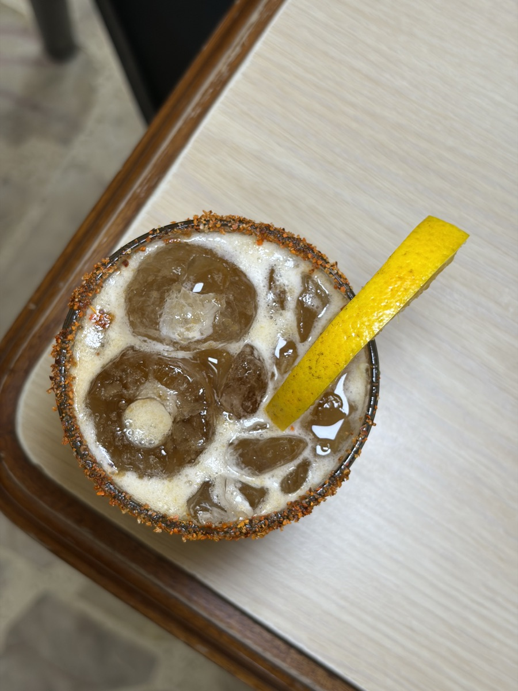

Signature
01 — La casa
Mezcalitas
Fruta de temporada y agave joven. Servidas con sal de gusano y un toque cítrico, son el alma de nuestra barra y la mejor compañía para una tarde sin prisa.
- BaseMezcal joven
- FrutaDe temporada
- ServirCon sal de gusano